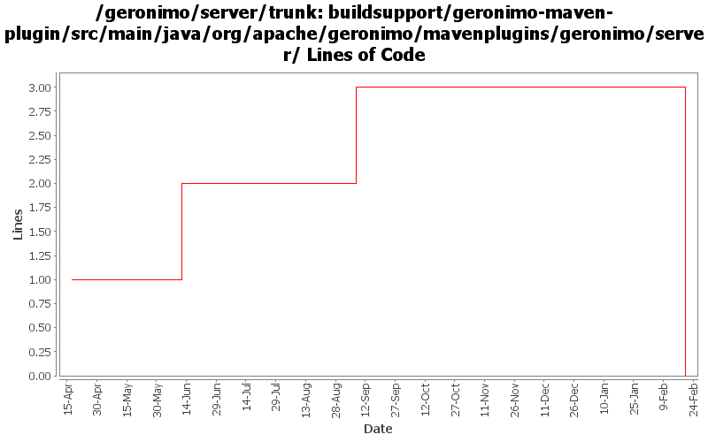

[root]/buildsupport/geronimo-maven-plugin/src/main/java/org/apache/geronimo/mavenplugins/geronimo/server

| Author | Changes | Lines of Code | Lines per Change |
|---|---|---|---|
| Totals | 21 (100.0%) | 5 (100.0%) | 0.2 |
| gawor | 11 (52.4%) | 3 (60.0%) | 0.2 |
| jlaskowski | 1 (4.8%) | 1 (20.0%) | 1.0 |
| djencks | 7 (33.3%) | 1 (20.0%) | 0.1 |
| dwoods | 2 (9.5%) | 0 (0.0%) | 0.0 |
GERONIMO-4538 Move stuff around so framework is self contained and builds the framework server. No groupId changes in this revision in case people dont like this change
0 lines of code changed in 6 files:
remove GERONIMO_BASE from scripts and pass org.apache.geronimo.home.dir system property instead of org.apache.geronimo.base.dir (GERONIMO-4229)
2 lines of code changed in 2 files:
header fixes (Rev, Date)
1 lines of code changed in 1 file:
fix InstallerMojoSupport to properly detect Geronimo installation directory after boilerplate.jar -> boilerplate.car change (related to GERONIMO-4328)
0 lines of code changed in 2 files:
GERONIMO-4283 start a lot of servers at once
1 lines of code changed in 1 file:
be a little better about closing jmx connections
1 lines of code changed in 7 files:
GERONIMO-3900 Add runtime support for non-Sun JVMs. Merged in updates from 2.1.1 branch.
0 lines of code changed in 2 files: